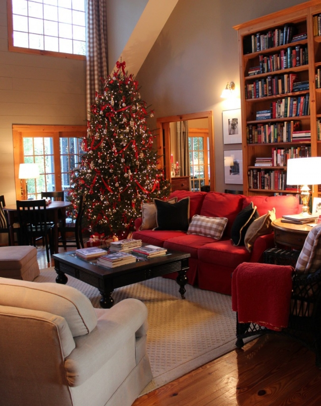
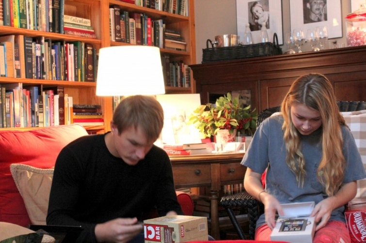

.png)
.PNG)
.PNG)
.PNG)
.PNG)
.PNG)
.JPG)
.JPG)
.PNG)
.PNG)



The Christmas holidays have flown past, and I find it hard to believe it is already New Year’s Eve. Â I did not get a chance to show you the great room in the Christmas posts…in fact, I totally forgot to photograph it! But the picture above from last year looks identical to this year’s decorating. Â I did take pictures on Christmas morning, though.
Here is the before. Â Santa’s gifts were waiting for the sleeping kids to get up.
During the happy chaos (One got a Nook, and one got a Kindle.  We’re definitely readers around here.)

And after all the gift giving was done
While my oldest was home for Christmas I did manage to coerce all three into finally taking a photograph for next year’s Christmas cards (since we could not get one done this year.)
And we had a couple of silly pictures when we tried to get the dog in on the action.
I sadly started taking down all the Christmas decorations yesterday – with Christmas music playing. 🙂  The putting away continued today (and will for the next several days.)  My husband worked on the outside, and he has worked on taking the ornaments and lights off the Christmas tree all afternoon while watching the Georgia Tech game. (They won!)  This is how it looked before he began to work on it.
(picture of tree from last year, but it looked the same this year)
Like everyone else seems to be doing, I want to take a look back at 2012 before it is totally written in the history books. Â My #1 New Year’s Resolution last year was to start a blog, and it has been such a blessing to have been able to do this. Â I have been so lucky to have been able to share all of this with you this year and to have gotten to “know” so many of you through your comments and emails. Thank YOU for this!
In school, I was always a “math kid,” so I can’t help but look at numbers. Â I thought I would share the top 5 of some things from 2012 from Talk of the House. So here goes…
The Top 5 Posts of 2012 1. Â Phases in the Life of My Kitchen Part 2
1. Â Phases in the Life of My Kitchen Part 2
 2. Â Christmas Traditions –Â Kitchen Sweets
2. Â Christmas Traditions –Â Kitchen Sweets
 3. Â Kitchen Styling – Our Kitchen
3. Â Kitchen Styling – Our Kitchen
 5. Â Christmas Traditions – Ribbon
5. Â Christmas Traditions – Ribbon
All of the above posts are the top 5 according to the number of times that they have been read. Â My next category is the top 5 posts with the most comments from readers.
 1. Â Christmas Traditions – Books
1. Â Christmas Traditions – Books
 2. Â Christmas Traditions – Kitchen Sweets
2. Â Christmas Traditions – Kitchen Sweets
 3.  Fall Entertaining:  A Dinner for Halloween
3.  Fall Entertaining:  A Dinner for Halloween
 4. Â Fall Entertaining: Â Chili on the Porch
4. Â Fall Entertaining: Â Chili on the Porch
From all of these numbers, I think it is safe to conclude that you all like the kitchen and eating! Â (Not bad things in my mind!)
I also want to thank my top 5 referring sites from this year. Â They have helped me soooooo much to get my blog out there and into the eyes of readers.
Top 5 Referring Sites for 2012
1. Â Rhoda at SouthernHospitalityBlog.com
2. Â Pinterest (yep !) Â So I am thanking all of YOU for pinning photos from here onto your boards.
3. Judy from Gracious SouthernLiving.blogspot.com
4. Â Julia from HookedonHouses.net
5. Â Melissa at TheInspiredRoom.net
 There are many others of you that have written posts about my blog, and others have added me to their sidebar, and for that I am so grateful.  And even beyond that, I thank those of you that have shared my site by telling your friends and family about it.  I cannot even begin to tell you how much I appreciate it!
So Happy New Year to all of you. Â I have had a very blessed year, and my wish for you is that 2013 will be filled with days full of good things with those you love. Â I am looking forward to sharing the new year with you!
Best wishes for 2013!


.PNG)
I just want you to know that your home is a really brilliant combination of colors and materials. It’s modern, warm and bright, without being trendy. Timeless, classic, cozy and fresh. It takes me to allot of pleasant places, past and present. It’s different in the best way. Bravo!
Would you mind sharing where you were able to purchase the end table in the great room, and the round table pictured by the Christmas tree? It’s hard to find and end table like that in that stain. Really beautiful.
We are building, and I find your home extremely inspiring. I have been leaning toward the all white painted panneling and white windows and trim, but I know that it’s trendy and may feel cold. Your walls and windows are really beautiful combined with your choices of colors and materials everywhere else. Thank so much for sharing the pics and inspiration.
Thank you for starting your blog. I love it! I love the way it is set up and the ease of maneuvering through it. It is so reader friendly( many require you to click and click and click to get to what you want to read!) I have thoroughly enjoyed reading what you have to say and I thank you for sharing your beautiful home. You have great style. Yours is a blog I always read, even if I miss a few days I always go back and read everything I missed. I look forward to seeing what 2013 has in store!
Congratulations on a wonderful year! I always look forward to your posts and so happy to have found your site. Looking forward to whats to come in the New Year!
May you & your family have a wonderful year to come! I love your great room! High ceilings are a definite must if I ever build. 🙂
Kelly, Thank you so much for sharing. I am soooo envious of your library shelves in the great room. Swoon…Your house is so homey and welcoming. Looking forward to the places you will take us this year.
Kelly,
Your kids are darling. They look like they are good friends as well as being siblings…such a gift to parents, don’t you agree?
Your tree is lovely. Is it real pine or faux? It’s so tall and that is such a wonderful spot for it.
Karen
———————————————————————–
Karen – Our tree is a real Frasier fir, and this year’s was the healthiest one we have ever had. It dropped very few needles! We bought it the day before Thanksgiving (so it didn’t sit at the store very long) and we kept it in a bucket of water for a week before bringing it inside. I think that really helped it. We will have to try that again next year.
Kelly
Happy 2013! I love the fresh new header! It looks perfect, as usual! Thanks for all that you have shared with us in 2012. I am looking forward to what you have in store for us in 2013! Good health and blessings to all!
Happy Fresh/New Year Kelly! You have some good looking kids there! Your posts are always so high quality and beautiful.
Best to you in 2013!
~Sarah
Go Jackets! We took down our Christmas while watching the game, too – so glad to get a win! I have one in college, too (and two still at home)- not many photos together, anymore.
Have a wonderful New Year!
-Trish
I have really enjoyed your blog this year, keep up the good work. Hope you have a Happy New Year.
i’m so glad i was one of your top referrers (sp?) as you are so deserving…i’d have a hard time choosing my favorite post because they ALL are! your talents, both in decorating and style of writing, should be showcased and recognized and i’m happy i had a small part of that.
i don’t think i’ve ever seen your great room and it is truly great! wow…what a tree!
your children are gorgeous…and your daughter looks just like you!
here’s to 2013!
Happy New Year Kelly! You were so smart to get the pictures for next year’s card. We didn’t have a pic this year to use either. That’s just a shame to let a whole year go by and not get a good pic of all the kids or the whole family. I’m going to work on that this year.
Your home just looks amazing. I love how cohesive everything is. Your checks, touches of red, wicker, jars…everything looks amazing! So glad you started blogging.
Happy New Year to you and your family. I really enjoy your blog. Looking forward to what may come in 2013.
Happy 2013, Kelly! Loved seeing your children. You have a beautiful family. I would love to see you more in the posts in 2013…what do ya think?! We start today taking everything down. It’s a good time to do a good deep cleaning, but everything looks so bare. I look forward to the new year and a fresh start. patty
———————————————————————
Patty – Ha ha on my being in the photos. I am extremely camera shy. I didn’t even have our wedding videotaped because of it. So…not sure I will be in the pics more…we’ll see. I agree with you about doing the deep cleaning when all the stuff is down. I hope to do that this coming weekend. We are STILL putting away from Christmas, and I want to do some reorganization of the cabinets in the kitchen so that I can fit all the Christmas kitchen things in one location. (Wish me luck!)
Kelly
What a beautiful family! I’ve just recently found your blog so I did not realize you just started it in 2012. Congratulations….on a great blog! Happy New Year to you and your family.
Kelly,
Happy New Year! I am always so happy to see you have a new post. I love your home and your style. I am also happy your tree is the same each year. Mine is too. My kids and grandchildren look for special ornaments each year.
I enjoy all of your red. It is such a happy color. I look forward to following you this year.
You have a beautiful family too.
Hugs,
Donna
I LOVE waking up early while I’ve been on break and seeing a new post on your blog – I am inspired to wake up my blog – haven’t done a thing since Halloween! Just seem to have trouble with a focus – any hints/help/inspiration would be appreciated…I do have a question about the Cargo beds – what kind of paint and primer did you all use and do you think it would look goofy to push the twins together and make them into a king size? Our daughter is marrying a guy who is 6’5″ and I think he needs a more comfortable place to sleep when they will be visiting! Happy New Year to you – back to school for me tomorrow 🙁
——————————————————————-
Susie – The Cargo beds. Yes, they were primed with some kind of oil based primer from Lowes, but I do not know what it was…just an off the shelf kind I am sure. The black was a standard black latex paint (Valspar) – a satin finish maybe? (Or if it did not come in satin, we simply mixed semigloss and flat together – I can’t remember if it did.) Both the primer and the black paint were sprayed on. I do not think it would look goofy at all to push them together. A lot of king size beds are just that – 2 twin headboards put together. I do worry about your son in law’s height though. At 6’5″ the footboard may make the bed a tight fit for him. If you had a bed with no footboard I would think that would be more comfortable for him. But if not, he could still sleep in it. My 6’2″ son does when he is home for a visit.
Kelly
I enjoyed reading your blog and checking out your photos – your house is beautiful.
cheers and best wishes from down under.
Beautiful family picture! Happy New Year!
What wonderful surroundings for the holidays. I love your blog because I love red in my rooms, and a bit of rustic. Of course there are many more reasons too, but every peek into your posts brings joy. May we all have a wonderful new year.
Love your blogs. Always get some great decorating ideas. Looking forward to seeing what you will have for 2013. Happy new year to you and your lovely family
Your tree is beautiful! Happy New Year!
What a great family you have, Kelly! Thanks for sharing your pictures, I’ve enjoyed them so much. Happy 2913 to you and yours!!
Rose L
happy new year, kelly to you and your beautiful family. thank you for sharing your beautiful home and life with us! so glad you started blogging!! xo
Your kids are so cute!!!
You KNOW how I feel about your blog 🙂
and our friendship, I’m thankful for!!
Let’s have a great 2013!!
Have a healthy, happy new year! What a beautiful family.
Kelly, thank you for blessing all of us with your beautiful blog since April. Your Christmas Tree is just beuatiful; and, your children are the most beautiful. It is so neat to know that someone other than me has a tree that looks the same each year. If it weren’t for the year on photographs, one would not be able to tell one year from the next. I love tradition, don’t you? I hope 2013 is an amazing year for you, your family, and Talk of the House. Happy New Year!!
Loved seeing your beautiful tree and what a great idea to take a Christmas picture for next year!! I just added Judy’s blog to my blog roll….she seems to be my kind of girl. Best wishes for you and your family in the new year Kelly!
Happy New Year! Your tree is (was) beautiful! Your blog always makes me smile and I can’t wait to read all your posts in 2013!!!
Thank you for sharing you beautiful house and great ideas,Kelly!
Katrina